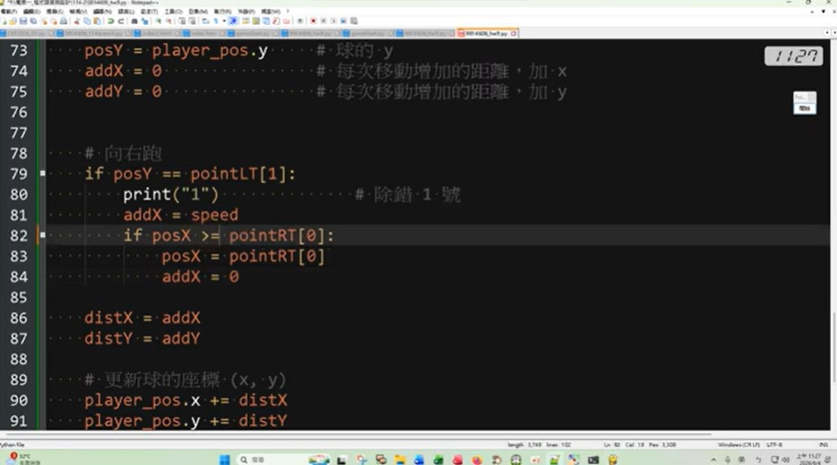
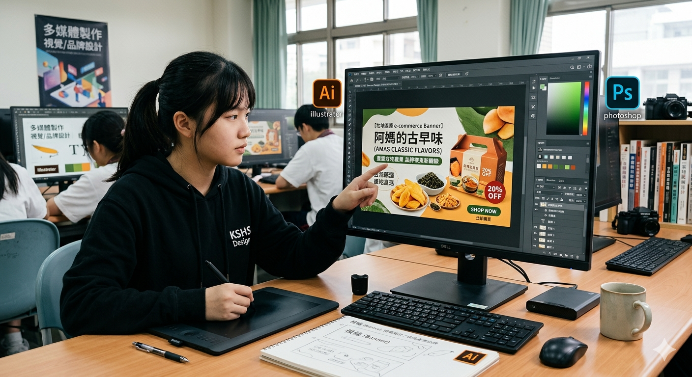

個人簡介
姓名：林柏辰
科別：電子商務科
座右銘：
用AI變革商業，用創新定義世代
我目前就讀南投高中電子商務科，學習網頁設計、程式設計、電子商務及多媒體設計等課程。透過各種實作累積經驗，希望未來能進入資訊相關科系，持續提升網站設計與程式開發能力，成為具有創意與專業能力的資訊人才。
姓名：林柏辰
科別：電子商務科
座右銘：
用AI變革商業，用創新定義世代
我目前就讀南投高中電子商務科，學習網頁設計、程式設計、電子商務及多媒體設計等課程。透過各種實作累積經驗，希望未來能進入資訊相關科系，持續提升網站設計與程式開發能力，成為具有創意與專業能力的資訊人才。
「看見南投」在地小農響應式網頁設計與開發 本成果源於高二「網頁設計實務」課程。我觀察到家鄉南投的許多因缺乏數位行銷管道，難以拓展年輕客群。因此，我運用課堂所學的 HTML5、CSS3 網頁切版技巧與 RWD 響應式

本成果源於高二「程式設計實務」課程。為了將抽象的程式邏輯與商業實務結合，我以「解決微型電商庫存計算繁瑣」為動機，運用課堂所學的變數宣告、控制結構（If-Else）與迴圈（Loop），獨立開發出一套商用進銷存計算程式。
HTML5/CSS3 網頁切版、響應式網頁（RWD）設計、個人/小農導購網站，過程中，我克服了跨裝置跑版的技術難題，並融入 UI/UX（使用者介面與體驗） 概念進行版面動線優化。本成果完整展現了我從前端程式碼撰寫到網頁視覺美學的整合實作力。
【數據驅動行銷：校園活動之社群媒體（IG）經營與成效分析】 本成果為「數位行銷實務」課程的專案報告。在人人皆電商的時代，如何精準獲客是核心關鍵。我以校園活動為標的，小組運用課堂所學的 TA（目標客群）定位與 STP 策略分析，設計出一系列行銷貼文。 我們實際在社群平台上架並投放，並在活動後導出後台數據，針對點閱率（CTR）與互動率進行圖表化分析。本成果展現了我從「直覺盲推」轉變為「數據思維」的商務洞察力。。

【品牌視覺重塑：在地產業電子商務橫幅（Banner）與視覺設計】 本成果源於高二「多媒體製作」課程。電商網頁的「第一眼視覺」直接決定了消費者的停留時間。本作品以重建在地品牌形象為動機，運用 Photoshop 與 Illustrator 軟體進行視覺設計。
【綠色電商趨勢：南投觀光產業轉型線上體驗之可行性研究企劃】 本成果為高二「專題實作」課程的階段性研究報告。因應全球 ESG 環保趨勢與後疫情時代的數位轉型，我們小組針對南投在地觀光產業，探討其切入「線上體驗電商」的可行性。
【財報觀測站：從會計循環與市場經濟看企業經營績效之分析】 本成果為高二「會計學與經濟學」課程的進階延伸應用。為了不讓商管知識流於死記公式，我選擇一家上市櫃電商企業作為研究對象，嘗試解讀其公開財務報表，並結合市場供需理論進行分析。